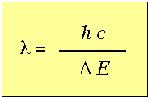
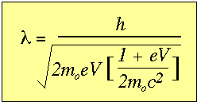
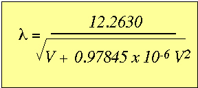
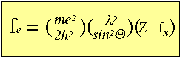
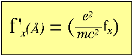
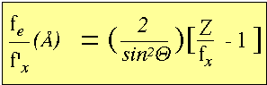

Suggested reading:
Güven, N. (1990) Electron diffraction of clay mineral. In Electron-Optical
methods
in
clay
science Vol. 2, (ed. I. D. R. Mackinnon and F. A.
Mumpton),
The Clay Minerals Society, Boulder, CO.,
Transmission electron microscopy and electron diffraction are an
extremely
powerful methods for studying the atomic structure of sub-micron
clay
mineral crystals.
The formation of high resolution electron images allow one to
characterize
the surface area, size distribution, and mineral surface
relationships.
In
addition to characterizing the crystal habits in a specimen,
imaging is
important
for locating the area for which electron diffraction analysis is
to be
performed.
Kinematic versus dynamical treatment of electron scattering.
The purpose of this section is to provide a framework to understand electron diffraction for those with a working knowledge of X-ray diffraction. This is most easily accomplished by comparing and contrasting the electron and X-ray scattering processes.
|
X-rays |
Electrons |
| Electromagnetic waves of photons | Waves of negatively charged particles |
| λ is fixed and independent of excitation voltage. | λ varies with accelerating voltage (V) |
|
 where:
|
 where:
Plugging in the constants yields the useful relationship between wavelength and accelerating potential.  |
| Scattering of photons occurs by electron clouds of the atoms |
Scattering of electrons occurs by electrostatic
potential
fields of the
atoms. The sum of the positive nuclear potential and the negative electron cloud potential. |
The electron scattering efficiency of an atom is approximated by
the
Mott equation.

where,
The units on fe
in units of length (Å)
The atomic scattering factor for X-rays can also be expressed in units of length (Å) by factoring in the (1) charge of the electron, (2) the relativistic mass of an electron and (3) the speed of light.

By looking at the ratio of the X-ray atomic scattering factor and
the
electron atomic scattering factor it possible to assess their
relative
scattering
efficiencies.
Let:
h2 = λ 2 m2 v2
and
c2 / v2~ 4 at 100 keV

This ratio, for Θ = 1° is
approximately
equal to 104.
The difference in scattering power of electrons, compared to
X-rays
makes
it possible to obtain diffraction effects from a single scattering
domain
only 10 to 20 unit cells thick (i.e., 100's of Å).
Amplitude of scattered electron relative to X-ray
|
X-rays |
Electrons |
| Amplitude of scattered X-ray relative to the incident beam is small (0.1%) | Amplitude of scattered electron relative to the incident beam is large. |
| Waves can be considered singly scattered | Result is large amounts of re-scattering. Therefore, must treat with dynamical theory. |
| Treat diffraction with kinematic theory | Can treat with kinematic theory if crystals are extremely thin. |
For more
about electron microprobe methods click here to learn more.
{kind=link}